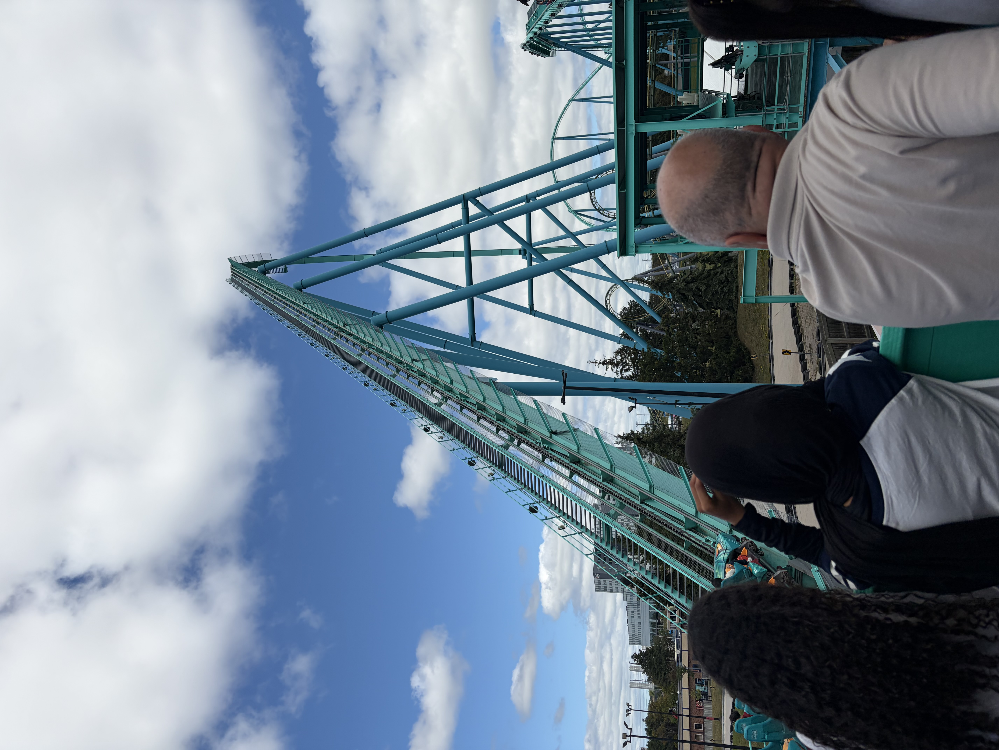
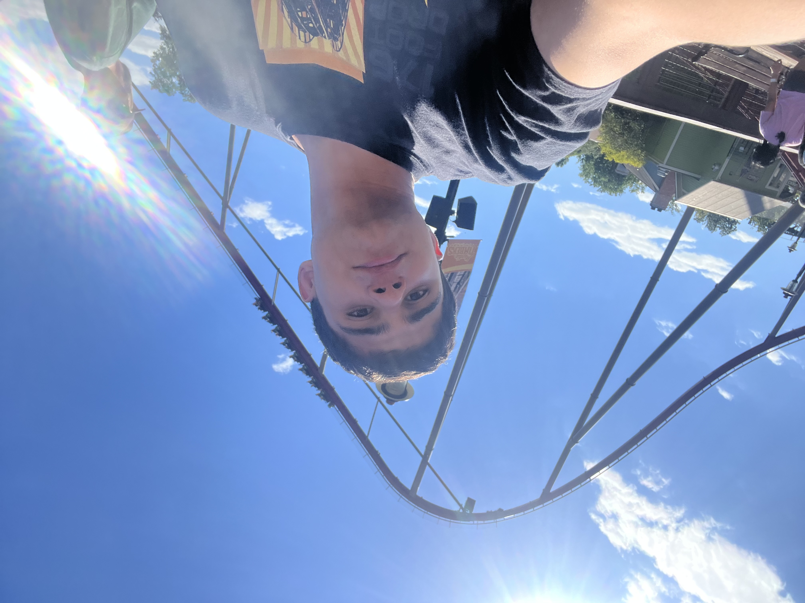

|
Cedar Point, 8/5/2023 |
 Canadas Wonderland, 8/17/2026 |
 Kings Island, 8/10/2024 |
My name is Michael Causi and I am 19 years old as of October 2026. Visiting amusement parks have been a major hobby of mine for almost 10 years. Some of the major parks that I have visited include Cedar Point, Canadas Wonderland, Kings Island, Kings Dominion, Six Flags Great Adventure, Hersheypark, Dorney Park, Six Flags New England, Great Escape, and Busch Gardens Williamsburg. I've ridden 126 different roller coaster in total. Cedar Point had always been my dream trip ever since I was 10. When I finally visited it for the first time in 2023, I was not presented with the most favorable conditions. It was packed Saturday in August and we underestimated how expensive the Fastlane would be, which meant I had to experience the full force of the crowds. Despite this setback, I still managed to have an amazing experience because of certain decisions I made. I published a special interactive experience for anyone who happens to visit Cedar Point on a packed day so that they could maximize their experience.
Uncover my secret tips first!